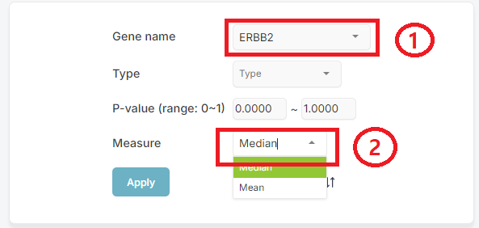
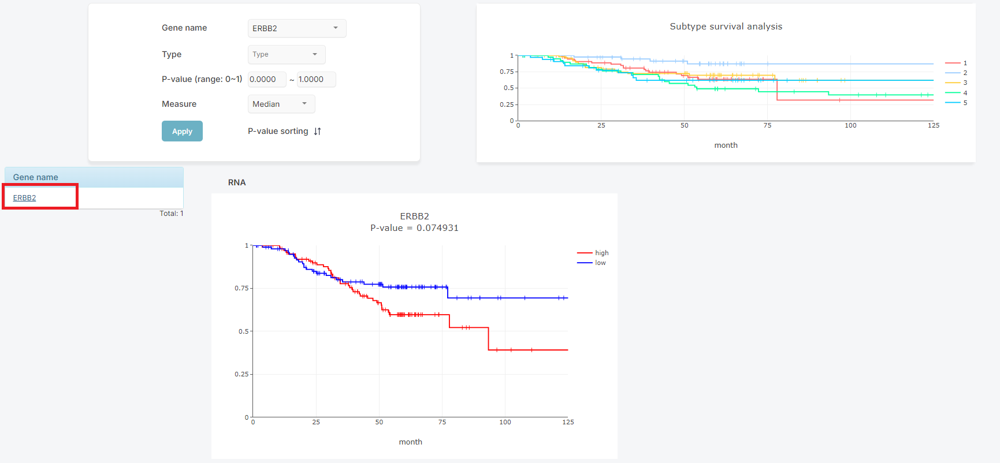
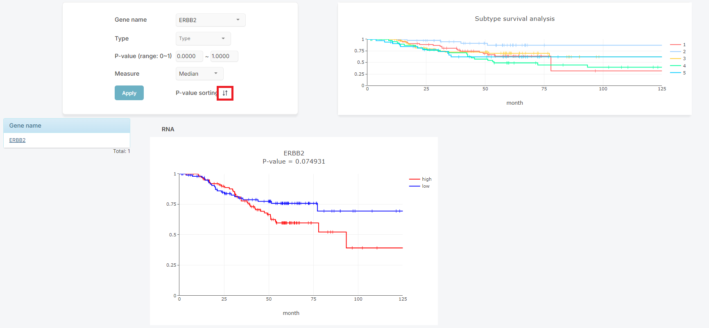
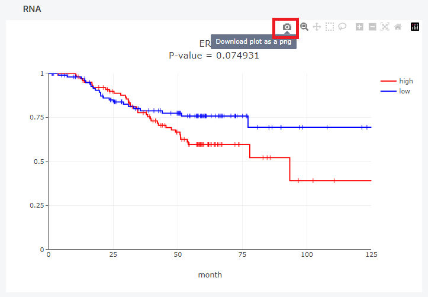

High and low groups were defined based on the median or mean value, and a survival plot was generated for each gene.
The plot titled 'Subtype Survival Analysis' next to the search box displays a survival plot by subtype, independent of any specific gene.
In the first box ① as shown below, select your target. The third dropdown requires you to select either 'median' or 'mean' (②).
The 'Type', second dropdown lets you select one of RNA, Protein, Acetylsite, or Phosphosite. If no selection is made, it will display all plots corresponding to these four types.
The initial p-value range is set from 0 to 1. By adjusting the p-value range, you can view survival plots that meet the specified conditions.
Clicking the [Apply] button generates survival chart and its respective P-value.
If you click on a gene name in the list, the corresponding survival plots are displayed on the left.
Search results can also be organized by its P-Value in the same type data.
How large the image appears on the screen can be adjusted using the zoom in and out buttons.
The resulting plot can be saved by pressing the save image button as shown below.
